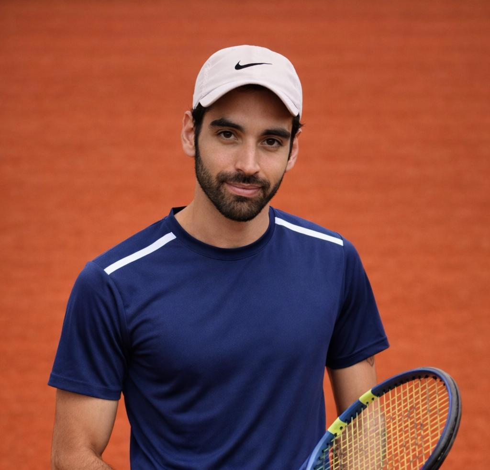

Über mich
Hallo, ich bin Nacho – Tennistrainer mit Leidenschaft. Mein Ziel ist es, Kinder und Erwachsene in ihrer Bewegung, Technik und Persönlichkeit zu stärken.
In meinen Trainingseinheiten verbinde ich saubere Technik mit viel Spielfreude und einem strukturierten, aber positiven Trainingsklima. Respekt, Zusammenarbeit und Fairplay sind mir dabei genauso wichtig wie Vorhand und Aufschlag.
Werte im Training
Formatives Tennisprogramm
Das Programm richtet sich an Einsteiger und fortgeschrittene Spielerinnen und Spieler in verschiedenen Altersgruppen – von Kindern bis zu Erwachsenen.
Angebote
Flexibel buchbare Einheiten in Bonn und Umgebung – auf Außenplätzen und in Hallen (je nach Saison und Verfügbarkeit).
Einzeltraining
Ideal für Spielerinnen und Spieler, die gezielt an bestimmten Schlägen, Beinarbeit oder Match-Situationen arbeiten möchten.
Gruppentraining
In der Gruppe entstehen Motivation und Spielfreude: Technik, Spielsituationen und Teamgeist werden gemeinsam aufgebaut.
Tenniscamps
Intensives Training mit mehreren Einheiten pro Tag – kombiniert mit Spielen, Koordinationsübungen und viel Spaß auf dem Platz. Die Camps finden bei der BSG Fraunhofer in Sankt Augustin statt.
Häufig gestellte Fragen
Hier findest du Antworten auf die wichtigsten Fragen rund um das Training.
Für welche Altersgruppen ist das Training geeignet?
Das Training richtet sich an alle Altersgruppen – von Kindern ab ca. 5 Jahren bis zu Erwachsenen jeden Alters. Die Inhalte werden individuell an das Alter und die Spielstärke angepasst.
Brauche ich eigene Ausrüstung?
Für den Anfang reichen Sportkleidung und Hallenschuhe (bzw. Außenschuhe je nach Saison). Schläger können bei Bedarf gestellt werden. Bei regelmäßigem Training empfehle ich jedoch einen eigenen, passenden Schläger.
Gibt es eine kostenlose Probestunde?
Ja, gerne biete ich eine unverbindliche Schnupperstunde an. Einfach per WhatsApp oder E-Mail melden, um einen Termin zu vereinbaren.
Wo findet das Training statt?
Das Training findet auf verschiedenen Plätzen in Bonn und Umgebung statt – je nach Saison auf Außenplätzen oder in Hallen. Der genaue Ort wird bei der Terminvereinbarung abgestimmt.
Wie läuft die Buchung ab?
Einfach per WhatsApp oder E-Mail Kontakt aufnehmen. Wir besprechen gemeinsam deine Ziele, passende Trainingszeiten und den Ort. Danach können wir direkt loslegen!
Was kostet das Training?
Einzeltraining beginnt ab 45 € pro Stunde. Gruppentraining ist bereits ab 12 € pro Person möglich (bei 4 Teilnehmern). Für individuelle Pakete oder regelmäßiges Training gibt es auf Anfrage angepasste Konditionen.
Kontakt & Anmeldung
Für Fragen, Probestunden oder konkrete Buchungen einfach direkt melden.
Ignacio Germán Dagostino Herrera
Trainingsorte in Bonn und Umgebung
Das Training findet je nach Saison auf Außenplätzen oder in Hallen in Bonn und Umgebung statt. Genaue Plätze und Zeiten werden bei der Terminvereinbarung individuell abgestimmt.